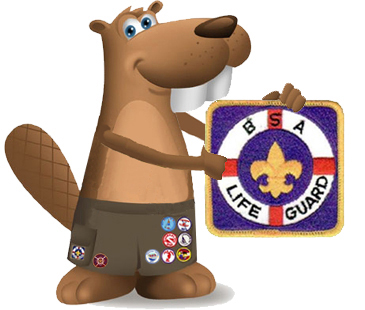
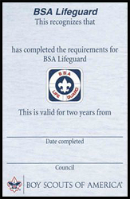

BSA Lifeguard

Swimsuit / swim trunks emblem – The BSA Lifeguard patch is NOT worn on the uniform or the sash; it is worn on the right side of the swimsuit / swim trunks
The primary purpose of the BSA Lifeguard training program is to provide professional lifeguards for BSA operated facilities, council aquatics committees, and year-round aquatics programming. In addition, this training is intended to meet the requirements of government agencies for operations at a regulated swimming venue. The program is open to all registered adults and youth, age 15 and older.
Training requirements for lifeguards at regulated venues are more extensive where swimming is conducted in natural waters rather than engineered pools. BSA Lifeguard is recognized as both a pool and a waterfront training program.
Those familiar with American Red Cross (ARC) lifeguard training will notice the basic skills required for BSA Lifeguard are similar to those of the ARC Lifeguarding program. That association is deliberate. ARC training for professional lifeguards in non-surf situations is widely recognized, and ARC professionals work closely with BSA professionals and volunteers. The BSA, however, has extensive experience conducting youth swimming activities both inside and outside of camp and has program-specific needs that must be addressed. BSA Lifeguard training includes basic prevention strategies, such as universally applied swimmer classification tests and other operating procedures that are not included in sufficient detail in ARC training.
To best support teaching the skills and knowledge required for BSA Lifeguard, the American Red Cross Lifeguarding Manual is a required resource for BSA Lifeguard instructors and candidates. In addition, instructors are required to use the American Red Cross Lifeguarding video segments. These video segments are available on DVD or, for qualified ARC Lifeguarding Instructors, online using the American Red Cross Instructor’s Corner website. Finally, the American Red Cross Lifeguarding Instructors Manual is recommended.
BSA Lifeguard Requirements
To be trained as a BSA Lifeguard, you must successfully complete the course as outlined in the BSA Lifeguard Instructor Manual and demonstrate the ability to perform each item specified in the following requirements:
Prerequisites
Before doing requirements 6 through 26, complete the following:
1.
Submit proof of age. You must be at least 15 years old to participate.
2.
Submit written evidence of fitness for swimming activities (signed health history).
3.
Swim continuously for 550 yards in good form using the front crawl or breaststroke or a combination of either, but swimming on the back or side is not allowed.
4.
Immediately following the above swim, tread water for two minutes with the legs only and the hands under the armpits.
5.
Starting in the water, swim 20 yards using a front crawl or breaststroke, surface dive 7 to 10 feet, retrieve a 10-pound object, surface, swim on your back with the object 20 yards back to the starting point with both hands holding the object, and exit the water, all within 1 minute, 40 seconds.
Requirements
Complete the following requirements within a 120-day period:
6.
Show evidence of current training in American Red Cross First Aid and American Red Cross CPR/AED for the Professional Rescuer or equivalent.
7.
Show evidence of current training in the BSA online module for Safe Swim Defense.
8.
Attend and actively participate in all activities, presentations, demonstrations, and skill sessions involving lifeguard behavior, duties, responsibilities, surveillance, intervention and water rescue as prescribed in the BSA Lifeguard Instructor Manual.
9.
Demonstrate reaching assists from the deck using an arm, a rescue tube, and a pole.
10.
Demonstrate throwing assists using a throw bag and a ring buoy with a line attached. Throw each device such that the line lands within reach of an active subject 30 feet from shore.
11.
Demonstrate:
a)
Rescue of an active subject in deep water using a rescue board, kayak, rowboat, canoe, or other rescue craft that would be available at your local facility.
b)
Repeat for a passive subject.
12.
Demonstrate an entry and front approach with a rescue tube to an active subject in deep water 30 feet away from shore. Position the rescue tube to support the subject and then assist the subject to safety, providing direction and reassurance throughout.
13.
Demonstrate an entry and rear approach with a rescue tube to an active subject in deep water 30 feet away from shore. Secure and support the subject from behind and then move the subject to safety, providing direction and reassurance throughout.
14.
Demonstrate use of a rescue tube to assist two subjects grasping each other. Secure, support and reassure both subjects. With the assistance of a second guard, calm and separate the subjects and move them to safety.
15.
Demonstrate both front and rear head-hold escapes from a subject’s grasp.
16.
Demonstrate an entry and front approach with a rescue tube to a face-down passive subject 30 feet away at or near the surface in deep water. Use a wrist roll to position the subject face-up on the rescue tube, tow to safety, and remove them from the water with assistance within 90 seconds. Immediately perform a primary assessment and demonstrate one-person CPR for 3 minutes.
17.
Demonstrate an entry and rear approach with a rescue tube to a face-down passive subject 30 feet away at or near the surface in deep water. Position the subject face-up, tow to safety and remove them from the water with assistance within 90 seconds. Immediately perform a primary assessment and demonstrate two-person CPR for 3-minutes.
18.
In shallow water, demonstrate in-water ventilation of an unconscious subject when prompt removal from the water is not possible. Open the airway, position the mask, and simulate ventilations.
19.
Demonstrate an entry and approach with a rescue tube for use when a passive subject is submerged face-down at or near the bottom in 6 to 8 feet of water. Bring the subject to the surface and tow to the nearest point of safety.
20.
Remove a subject from the water using each of the following techniques in the appropriate circumstances with the aid of a second rescuer:
a)
Extrication at the edge of a pool or pier using a backboard
b)
Walking assist
c)
Beach drag
21.
Participate in multiple-rescuer search techniques appropriate for a missing subject in murky water:
a)
Line search in shallow water
b)
Underwater line search in deep water without equipment
c)
Underwater line search in deep water with mask and fins
22.
Demonstrate in-line stabilization for a face-down subject with suspected spinal injury in very shallow water (18 inches or less).
23.
Demonstrate in-line stabilization for a suspected spinal injury in shallow water (waist to chest deep):
a)
For a face-up subject
b)
For a face-down subject
24.
Demonstrate in-line stabilization for a suspected spinal injury in deep water, swim the subject to shallow water, confirm vital signs, and with the assistance of others, remove the subject from the water using a backboard with straps and a head immobilization device.
25.
Correctly answer 80 percent of the questions on the BSA Lifeguard knowledge test covering the course material. Review any incomplete or incorrect answers.
26.
Serve as a lifeguard, under supervision, for at least two separate BSA swimming activities for a combined time of two hours. Afterward, discuss the experience with the lifeguarding instructor.
BSA Lifeguard Award
Completion Options Course completion cards are valid only when signed by either a current BSA Aquatics Instructor or BSA Lifeguard Instructor approved by the local council. Training is valid for two years, provided First Aid and CPR/AED for the Professional Rescuer training are kept current during that period.
There are five ways to obtain a course completion card:
Course Completion – Complete all requirements in the instructor manual during a scheduled course of instruction. The participant must attend all course sessions. Makeup sessions are allowed at the instructor’s discretion. If an individual is unable to complete all requirements during the scheduled course, the instructor may elect to continue training until the participant is able to complete all the requirements provided the total elapsed time from start to finish does not exceed the 120-day period.
Renewal Challenge – Anyone with a BSA Lifeguard completion card that is current or has expired within six months may renew or extend the training by performing requirements 2 through 25 without attending the standard course sessions. Prior to the testing, the instructor may provide a renewal training session to review and update skills and information. Summer camp aquatics directors should renew training for aquatics staff members during pre-camp training while emphasizing local camp facilities, procedures, and emergency action plans.
Crossover Challenge – Anyone who holds current training in American Red Cross Lifeguarding, American Red Cross Waterfront Lifeguarding, or other lifeguard training programs may obtain a BSA Lifeguard completion card by performing requirements 1 through 26 without attending the standard course sessions. The lifeguard training program that issued the training certificate must be recognized by the local or state regulatory agency that sets standards for lifeguards at youth camps. The instructor may provide a crossover training session to review and update skills and information prior to the testing. The applicant may receive credit for requirement 26 if within the past 18 months he or she has served as a lifeguard, under supervision, or has supervised lifeguards, for at least two separate BSA swimming activities for a combined time of two hours. Otherwise, due to BSA procedures not implemented at other lifeguarding venues, the applicant must accomplish requirement 26.
Completion of BSA Aquatics Instructor – Anyone who completes BSA Aquatics Instructor training at National Camping School.
Co-Instructors (BSA Aquatics Instructor or BSA Lifeguard Instructor) may each sign a completion card for the other at the conclusion of a BSA Lifeguard course if they satisfy requirements 2 through 24.
The BSA Lifeguard award is available to all Scouts BSA members and Venturers age 15 and older, and adult volunteers who have successfully completed the BSA Lifeguard course and demonstrated the ability to perform each of the skills taught in the course.
Upon successful completion, participants earn the BSA Lifeguard patch along with their BSA Lifegaurd certification card. BSA Lifeguard training and certification is valid for two years.

BSA Lifeguard – Forms, Links, and Resources
Aquatics Supervision – Leader's Guide